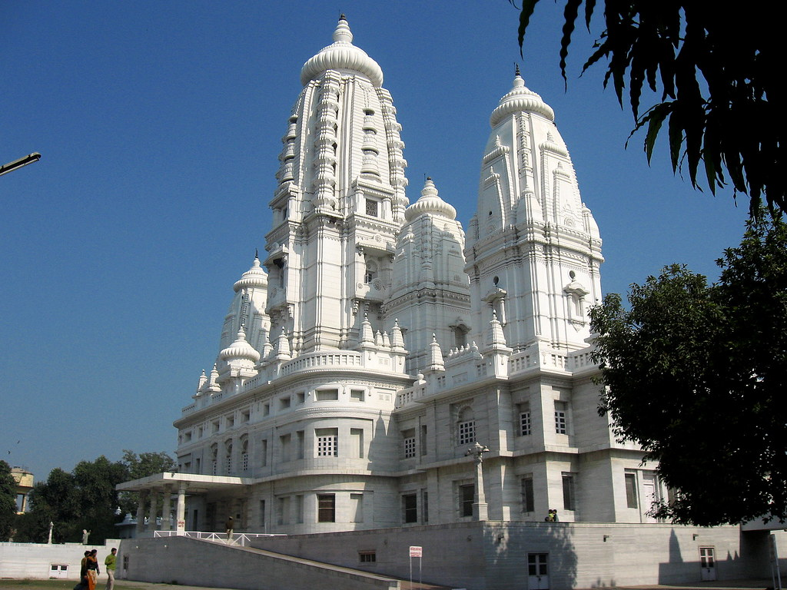
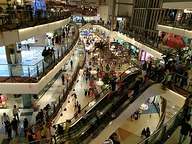
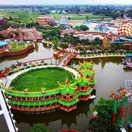
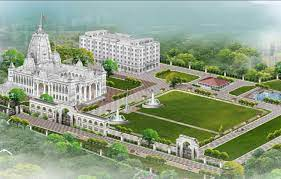
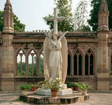
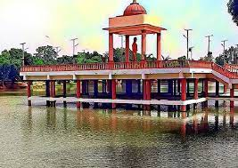

JK Temple
JK Temple is a Hindu temple in the Indian city of Kanpur, Uttar Pradesh, India. It is considered
to be a unique blend of ancient and modern architecture. The mandapa of the temple has been
constructed with high roof for adequate ventilation of light and air.

Z Square Mall
Z Square Mall is a shopping mall cum entertainment complex in the Indian city of Kanpur. The
mall is spread on an area of five acres in the middle of Kanpur city with 900,000 sqft. of
built-up area and the presence of more than 150 National & International brands.

Blue World
Massive theme park featuring vibrant water slides, pools, roller coasters & other rides.

ISKCON Temple
International Society for Krishna Consciousness temple featuring an ashram & a vegetarian
eatery.

The Kanpur Memorial Church
The Kanpur Memorial Church, originally known as the All Souls' Church, is a church located in
Kanpur, India that belongs to the Church of North India, a united Protestant denomination. It
was built in 1875 in honour of British valour during the Siege of Cawnpore in 1857.

Moti Jheel
Moti Jheel is a lake and drinking water reservoir in the Benajhabar area of Kanpur, which
together with its adjoining gardens and children's park is an important tourist attraction.
